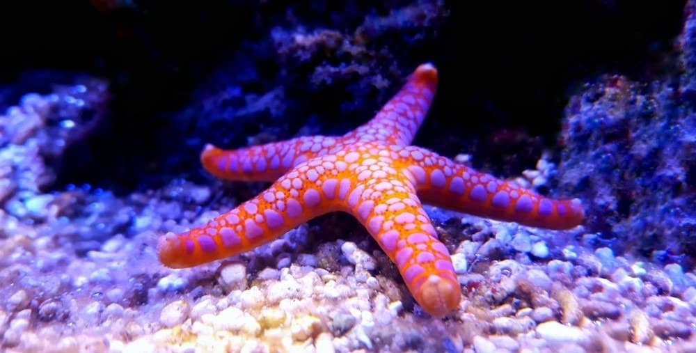

Culleys intro to HTML
Completely Random Information About HTML
Tim Berners-Lee created HTML,as he is a computer scientist who worked for nuclear research. However he designed something that i previously explained called hypertext-Markup-languaage, which the system brought a netowrk called WWW. Which was responsible for creating the internet as we know it, and why he is one of the faces that is responsible for creating the internet.
More Completely random interesting facts about HTML
HTML while it looks like it, isn't at all a coding language. Instead, it's a markup language used to deteramin how information would and will look like ona web page, like mine.
Here are some animals that i Like!
- Cane Toads
- African African bullfrogs
- Hounds
- Starfishes
.jpg) factsheet-cane-toad-bufo-marinus
factsheet-cane-toad-bufo-marinus
 African_bullfrogs
African_bullfrogs
 Basset_Hound
Basset_Hound

Starfishes
Here's Some Infomration About These Animals.
Here's some more information about all of the animals that i've listed.
- Cane Toads are incredibally big with some being up to 5 pounds!
- African Bullfrogs are one of the largest frogs in the world with the big chonkers getting up to 9 whole inches long.
- Basset Hounds are incredibally Stubby with some beings a cuouple inches off the ground. They are known for being seen as lazy as they have droopy ears and eyes sometimes, however they are incredibally strong as they are so low to it.
- Starfishes can regenerate limbs, even though they have no brain, instead they have a decentralized nervous system which simulates a brain for them.